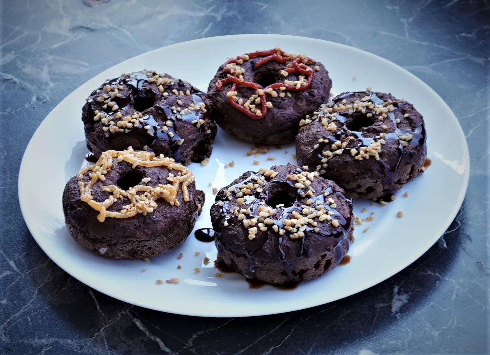
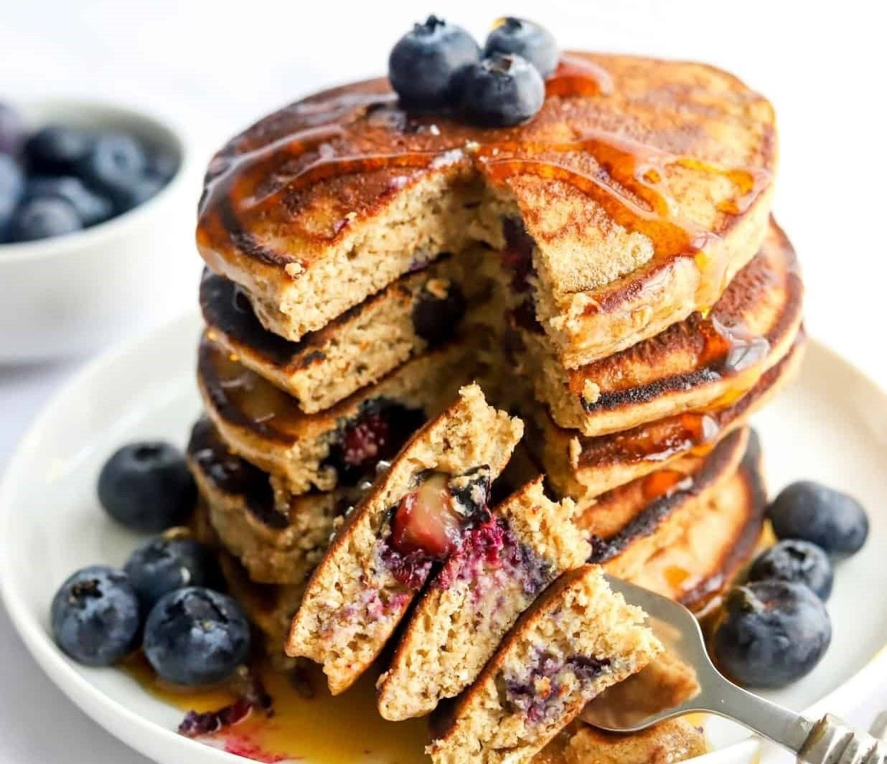
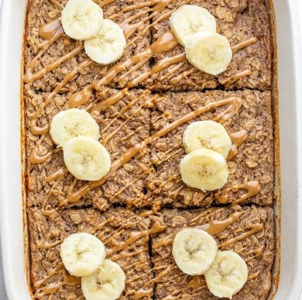
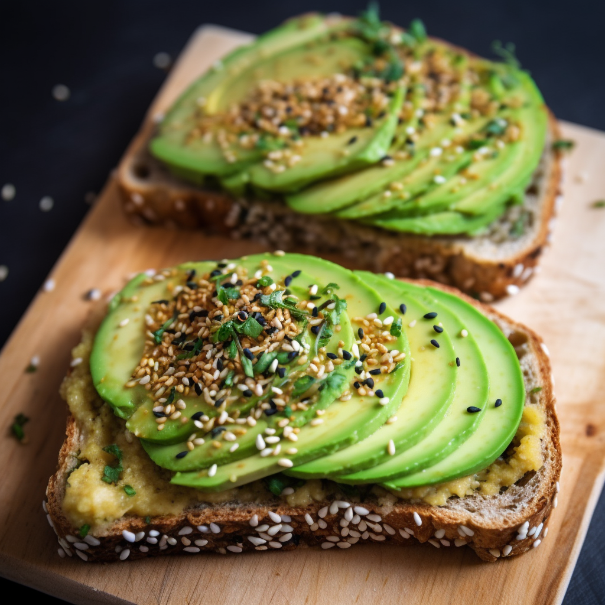

Chocolate Protein Donuts
Indulge in these guilt-free chocolate protein muffins that are not only delicious but also packed with nutritious ingredients like skyr and applesauce. These moist and flavorful muffins are perfect for a satisfying and healthy treat.
Ingredients:
- 20g coconut flour
- 25g protein powder (whey or casein)
- 20g cocoa
- 80g skyr (Icelandic dairy product)
- 100g applesauce
- 1 egg
- 5g baking powder
- Sweetener to taste
- Vanilla
- Pinch of salt
- Toppings of your choice
Instructions:
- Combine the dry ingredients and mix them well.
- In another bowl, mix the wet ingredients (egg, skyr, applesauce).
- Combine the two mixtures; the result should be a thick batter.
- Distribute the batter into a baking mold. If you don't have a specific mold for donuts, you can make excellent muffins from the batter.
- Bake at 180 degrees Celsius (356 degrees Fahrenheit) in a preheated oven for 20-25 minutes.
- Allow them to rest for 15-20 minutes and decorate the top with your favorite toppings.
- Enjoy these wholesome chocolate protein donuts as a delightful and nutritious snack!
Protein pancakes
Up your protein with these pancakes made with eggs, oats, milk and protein powder. A great breakfast after a workout, enjoy with nut butter or fruit
Ingredients:
- 1 banana
- 80g oats
- 3 large eggs
- 2 tbsp milk (dairy, soya, oat or nut milks all work)
- 1 tbsp baking powder
- pinch of cinnamon
- 40 g protein powder (whey, pea or whatever your preference)
- coconut oil, or a flavourless oil, for frying
- nut butter, maple syrup and berries or sliced banana to serve
Instructions:
- Whizz the banana, oats, eggs, milk, baking powder, cinnamon and protein powder in a blender for 1-2 mins until smooth.
- Check the oats have broken down, if not, blend for another minute.
- Heat a drizzle of oil in a pan.
- Pour or ladle in 2-3 rounds of batter, leaving a little space between each to spread.
- Cook for 1-2 minutes, until bubbles start to appear on the surface and the underside is golden.
- Flip over and cook for another minute until cooked through.
- Transfer to a warmed oven and repeat with the remaining batter.
- Serve in stacks with nut butter, maple syrup and fruit.
Protein Banana Cake
A protein-rich and delicious banana cake that's perfect for a healthy treat.
Ingredients:
- 4 eggs
- 500g bananas
- 20g cocoa powder
- 100g rolled oats
- 10g baking powder
- Sweetener (to taste)
- 50g protein powder (whey, pea or whatever your preference)
Instructions:
- In a bowl, combine the oat flakes, protein powder, cocoa, baking powder, and sweetener. Mix well.
- In another bowl, beat the 4 eggs and add them to the dry ingredients.
- Mash the bananas, reserving one for topping the cake as decoration. Add the mashed bananas to the mixture and stir.
- Preheat your oven to 200 degrees Celsius (392 degrees Fahrenheit).
- Prepare a baking dish with parchment paper and pour the batter into it.
- Slice the reserved banana and place the slices on top of the batter as decoration.
- Bake in the preheated oven for approximately 20 to 30 minutes.
Avocado Toast
A simple and delicious avocado toast recipe that's perfect for a healthy breakfast.
Ingredients:
- 2 slices of whole-grain bread
- 1 ripe avocado
- Salt and pepper to taste
- Optional toppings: cherry tomatoes, poached egg, red pepper flakes
Instructions:
- Toast the slices of whole-grain bread until golden brown.
- Mash the ripe avocado and spread it evenly on the toasted bread.
- Season with salt and pepper to taste.
- Add your favorite toppings such as cherry tomatoes, a poached egg, or red pepper flakes.
- Serve and enjoy!